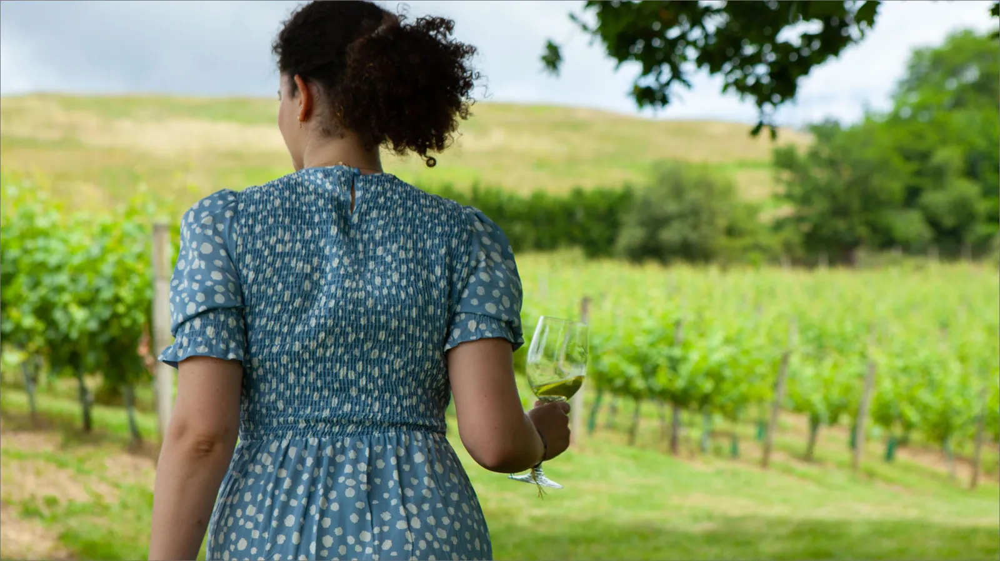
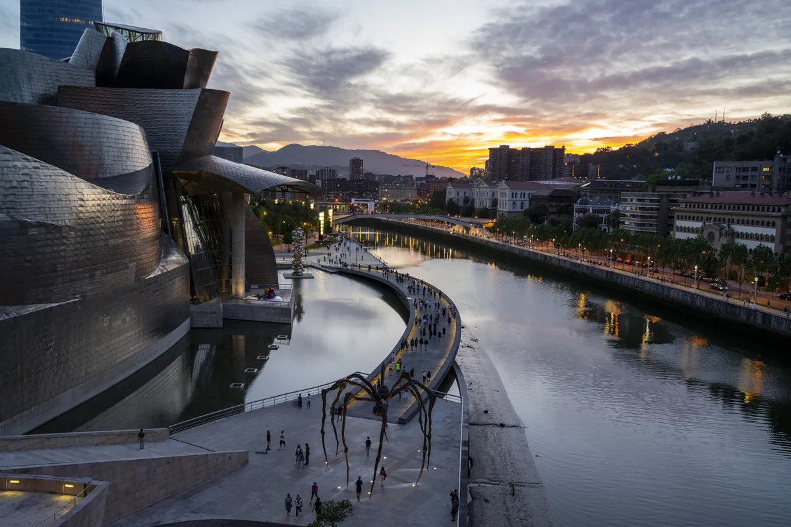
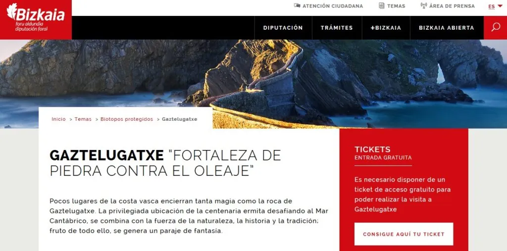

The
Larrabetzu
Weekend
Larrabetzu
Pick your dinner
- Experience
- Wicker-basket picnic by vertical garden → snacks in recycled-materials room → maritime appetisers in kitchen corridor → seated glass dining room overlooking the valley [1]
- Open
- Tue–Sat lunch 13:00–14:30 · Fri–Sat dinner 20:00–21:15
- Book
- azurmendi.restaurant · +34 944 558 359
- Accolades
- LEED Gold · World's Most Sustainable Restaurant 2014 & 2018 [10] · #49 World's 50 Best 2021 [11]
- Experience
- Single tasting menu cooked live in an open kitchen; same seasonal Basque philosophy as Azurmendi but informal and immediate [3]
- Open
- Wed–Sun lunch 13:00–15:30 · Fri–Sat dinner 20:30–21:30 [4]
- Book
- eneko.restaurant · +34 944 558 866
- Location
- First floor of the same glass building at Barrio Legina s/n — the winery is one floor below, Azurmendi one above [6]
Three in one address
Gorka Izagirre Winery
Hamaiketako experience: 4 txakoli wines with Idiazábal cheese, cured ham and a gilda pintxo [5]
€30 p.p.Eneko ★
Sutan live open-kitchen menu. The gate for first-timers or a solo Atxa experience without the full theatrical commitment
€96 p.p.
The 11:00 Hamaiketako
Stack the morning: a winery tour before the lunch sitting. Book online or call +34 606 206 651. 40 hectares across 6 Bizkaia municipalities; the same family as Azurmendi. [5]
Daily · 11:00 · €30 p.p.A two-day frame
Compound + Dinner
Day trip + City
What's within 45 minutes

Bilbao
Guggenheim (€15, Tue–Sun 10–19) [13] + Casco Viejo pintxos zone, 100+ bars in Las Siete Calles [41]

Gaztelugatxe + Bermeo
San Juan de Gaztelugatxe — 10th-century hermitage islet (Dragonstone, GoT) — free timed ticket required [14]
Gernika
Peace Museum — 3D recreation of the 1937 bombing (€6.50; free Sat afternoons) [16] + Tree of Gernika + Casa de Juntas (free) [23]
Hike the Txorierri valley
Bizkargi (555 m)
Wooded peak topped by the Santakrutz hermitage and stone cross. A longer 15.5 km linear trail climbs from Larrabetzu's Goikolexea neighbourhood directly. [21]
Mount Gorbea (1,482 m)
Highest peak in Bizkaia; 18-metre iron cross at the summit. 490 m gain, easiest approach from Pagomakurre. Half-day excursion from the Larrabetzu base.
Zamudio–Larrabetzu Greenway
Disused Bilbao–Lezama railway corridor (closed 1908), converted cyclo-pedestrian path including a 500 m tunnel. Good lazy morning option if saving energy for dinner. [23]
Book the anchor first — then everything else falls in
Azurmendi fills up faster and seats fewer guests. Secure the dinner before planning day trips or lodging. Both restaurants take reservations online and by phone. Taxi from central Bilbao takes ~20 min and costs ~€25–35 each way. [18]
Logistics at a glance
Getting there
Weather window
- Best: June–mid-September (warmest, driest) [20]
- May and September good shoulder months
- November and April rainiest
- Summer daytime range: 13–26 °C
- Both restaurants open year-round Fri–Sat — no forced seasonal window
Gaztelugatxe tickets
- Mandatory daily: Jun 10–Sep 15
- Mandatory weekends/holidays: Apr 13–Jun 9 and autumn
- Daily cap: 1,462 persons [15]
- Free; book at tiketa.eus — cancellable up to 2 h before
- No-show = 1-year booking ban
Base in Bilbao
- No hotel infrastructure in Larrabetzu village itself
- Urban hotels in Bilbao centre cover Guggenheim, Casco Viejo, and Artxanda
- Agroturismo options near Mungia (~15 min from BIO, from ~€80/night)
- Euskotren E3 line reaches Lezama (2.5 km from Larrabetzu) in 25 min from Bilbao [49]